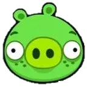

Construir
construir para conseguir los huevos usando cajas, ruedas el limite es la imaginacion
y conseguir las estrellas del nivel

eggs
Bad Piggies es un videojuego de puzles desarrollado y publicado por Rovio Entertainment. Derivado de la serie Angry Birds, se lanzó para dispositivos móviles y PC en septiembre de 2012. A diferencia de las entregas anteriores, el juego sigue a los cerdos, concretamente a un Cerdo Minion llamado Ross, siendo el Rey Cerdo y el Cerdo Mecánico personajes recurrentes. La jugabilidad consiste en que el jugador construya vehículos para llevar a Ross a sus destinos.
Ver informacionconstruir para conseguir los huevos usando cajas, ruedas el limite es la imaginacion
y conseguir las estrellas del nivel
Crea tu primer nivel de plataformas y juegalo con tus amigos
Centro de computo . 10:30
Haz tu pagina personal con HTML y CSS en una hora
Aula 14 . 12:00
| hora | actividad |
|---|---|
| 8:00 | inauguracion en la explanada |
| 9:00 | Talleres y recorido por los stands |
| 13:30 | premiacion y clausura |
cuantro colores frios que son vecinos en el circulo cromatico y dos calidos del lado opuesto: armonia analoga con acento complementario
#lD2A5B #lF6F88 #2BA59A #EAF4F6 #FFE8D6 #F0784B